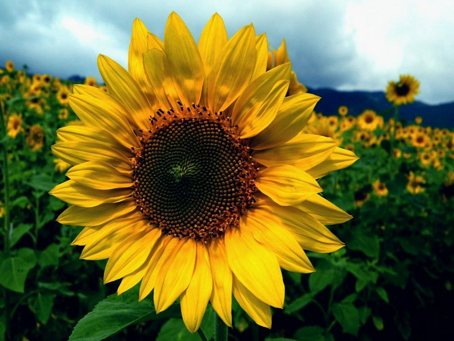
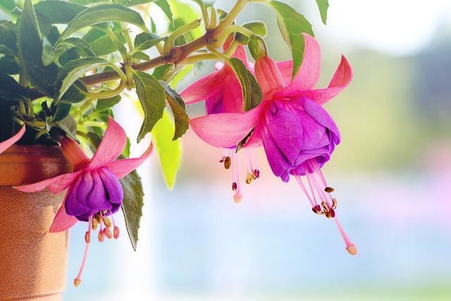

Rosa
Planta conocida por sus flores fragantes y vistosas, disponibles en una amplia gama de colores. Las rosas son símbolos tradicionales de amor y belleza.Precio : 250 $
Aloe Vera
Planta con hojas carnosas que contienen un gel utilizado en medicina y cosmética por sus propiedades curativas y antiinflamatorias.Precio : 250 $
Bambu
Planta de rápido crecimiento, utilizada en construcción, alimentación y como ornamental. Es famosa por su resistencia y flexibilidad.Precio : 250 $

Cactus
Plantas adaptadas a ambientes secos, con tallos gruesos que almacenan agua. Tienen espinas en lugar de hojas para reducir la pérdida de agua.Precio : 250 $

Girasol
Conocido por sus grandes flores amarillas que siguen el movimiento del sol. Sus semillas son comestibles y ricas en aceites.Precio : 250 $
Helecho
Planta con hojas grandes y divididas, conocida como frondas. No produce flores ni semillas, se reproduce mediante esporas.Precio : 250 $
Lavanda
Planta aromática con flores moradas, utilizada en perfumería, medicina y como repelente de insectos. Conocida por su efecto calmante.Precio : 250 $

Menta
Planta aromática utilizada en cocina y medicina. Sus hojas tienen un característico aroma fresco y propiedades digestivas.Precio : 250 $

Orquideas
Plantas con flores exóticas y diversas, conocidas por sus intrincadas formas y colores. Muchas especies crecen sobre otros árboles sin ser parásitas.Precio : 250 $
Pino
Árbol conífero de hojas perennes en forma de agujas. Produce conos que contienen semillas y es importante en la industria maderera y para la reforestación.Precio : 250 $
Agave
Plantas perennes con rosetas de hojas carnosas y espinosas, conocidas por su uso en la producción de tequila y mezcal.Precio : 250 $
Begonia
Plantas ornamentales apreciadas por sus flores coloridas y variadas, que pueden ser simples o dobles según la especie.Precio : 250 $
Calendula
Conocida por sus flores brillantes de color amarillo o naranja, utilizadas en medicina tradicional y en cosmética.Precio : 250 $

Dalia
Plantas perennes valoradas por sus flores grandes y variadas en forma y color, ideales para jardines y arreglos florales.Precio : 250 $
Eucalipto
Árboles conocidos por su fragancia y por las propiedades medicinales de su aceite. Originarios de Australia, se cultivan en todo el mundo.Precio : 250 $

Fucsia
Arbustos ornamentales con flores colgantes en tonos de rosa, púrpura y blanco. Atraen a los colibríes y son populares en jardines colgantes.Precio : 250 $
Geranio
Plantas herbáceas perennes apreciadas por sus flores vistosas en una amplia gama de colores y por su aroma característico.Precio : 250 $

Hortensia
Arbusto ornamental conocido por sus grandes cabezas de flores en forma de bola, que pueden cambiar de color según el pH del suelo.Precio : 250 $